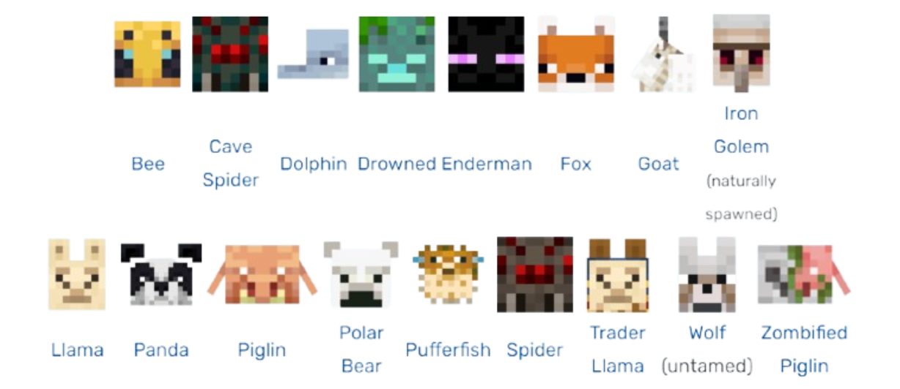

Minecraft Mobs
A mob is an AI-driven entity that can spawn in your Minecraft world.
In the AI of mobs, there are three types, passive, hostile, and neutral.
Different types of mobs can drop loot (or not) and can be hurt by nature, the player, and even other mobs.
Mobs help make Minecraft feel much more lively and aids in unique gameplay,
tying to the main theme of Minecraft being a survival sandbox game.
Passive Mobs
Passive mobs are mobs that are harmless to the player (except for the pufferfish), even when attacked.
When attacked, most passive mobs run away, and when killed, some drop items that range from food, crafting materials,
or just nothing.
Most passive mobs can be bred to create baby versions of them,
and some can be tamed to act as a pet or to use as transportation. Below is currently all passive mobs.
Hostile Mobs
Hostile mobs are aggresive mobs that will attempt to hurt the player once they are in their detection range.
Most hostile mobs that spawn in the Overworld usually come out during nighttime, and burn during the day.
Hostile mobs can also hurt other hostile mobs, which can sometimes cause a fight between both mobs.
Some hostile mobs also fight with passive or neutral mobs, such as zombies going for villagers.
Below is currently all hostile mobs.
Neutral Mobs
Neutral mobs are sometimes passive and sometimes hostile.
Most of the neutral mobs only attack the player once the player hurts them.
Some mobs may be naturally hostile (spiders only attacking in dark areas / nighttime),
and some mobs may have an additional way of being provoked. (staring at an enderman)
Below is currently all neutral mobs.

If you want to learn more about mobs, you may refer to this video:
One Fact About All 79 Minecraft Mobs
Summary Table
To summarize mobs, here is a table containing examples of them.
| Type |
Name |
Spawn / Drops |
Behavior |
| Passive |
Cow |
Plains/Forest — Leather, Raw Beef |
Flees from player; harmless |
| Passive |
Sheep |
Plains/Hills — Wool, Raw Mutton |
Grazes; can be sheared |
| Neutral |
Enderman |
Night/End — Ender Pearls |
Passive until looked at or attacked |
| Neutral |
Bee |
Bee Nests — N/A |
Neutral; aggressive if hive is broken |
| Hostile |
Zombie |
Night/Dark areas — Rotten Flesh |
Always attacks the player/mobs |